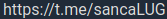

sancaLUG
Linux e cultura livre @ São Carlos-SP
Olá! :)
O sancaLUG é um grupo que celebra software, hardware e cultura livre em geral, na cidade de São Carlos e região. Organizamos eventos que vão de apresentações feitas por membros da comunidade, passando por festas de instalação de GNU/Linux e encontros informais. Também fomentamos suporte e conversas em nosso grupo de mensagens. O nome sancaLUG é uma abreviação de São Carlos Linux User Group, cuja tradução é Grupo de usuários de Linux de São Carlos.
Participe! Qualquer pessoa pode fazer parte: nossa comunidade é um conjunto eclético de pessoas de todos níveis e as áreas do conhecimento!
Telegram: 
Facebook: https://www.facebook.com/sancaLUG
GitHub: https://github.com/sancaLUG
Código de conduta
Encontros e eventos
- LUGBar: encontro mensal para discussões descontraídas entre os membros do LUG.
- Linux em prosa: Comidas, bebidas e palestras. Esse é o modelo do Linux em Prosa. A comunidade se reúne para aprender e ensinar coisas novas!
- Installfest: festival de instalação de GNU/Linux em PCs de pessoas que desejam se aventurar nesse fantástico mundo FLOSS (Free, Libre and Open Source Software)!
- Eventos singulares: o LUG também organiza e colabora na produção de eventos como o Arduino Day, Software Freedom Day, Livre Game Jam, Mutirão de colaboração ao OpenStreetMap e outros!
Próximos eventos: em hiato… retornamos em breve! Enquanto isso, participe do nosso grupo do Telegram!
Realizados anterioremente:
- 2019-10-12: LUGBar 14 (feedbacks de novos usuários Linux das últimas instalfests)
- 2019-06-15: Installfest no SESC
- 2019-06-01: Mutirão de colaboração ao OpenStreetMap #2
- 2019-03-23: Installfest na USP
- 2019-03-23: LUGBar de recepção na comunidade
- 2019-02-10: LUGBar 13
- 2019-01-26: LUGBar 12
- … e outros mais, desde 2016-09-24!
Construído com pandoc e water.css.